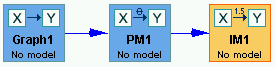
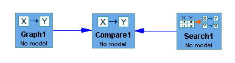
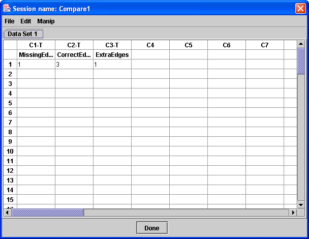

and run a PC search with the result:
Inside the Compare Box |
A Compare box in the main workspace looks like this:


The use of the Compare Box is very simple and best understood with an example.
Suppose we have generated data from an IM with a graph.
and run a PC search with the result:

Then the Compare books returns the agreement and differences between the edges
of the two graphs (not their orientations)
